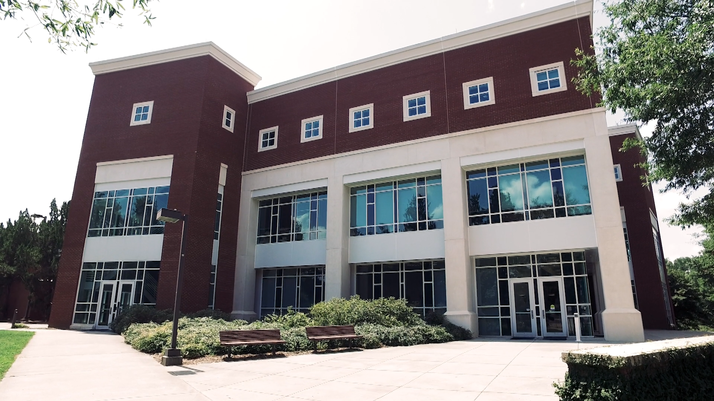

Welcome to the Vision and Learning Lab at the Clemson University!
Vision and learning Lab (ViL) focuses on learning-based 2D/3D computer vision, especially their combination with generative AI methods and applications in small-data and noisy scenarios. Our vision is to advance vision and learning methods to enhance our daily life, healthcare, and scientific discoveries.
Motto: We nurture talents for the future of AI.